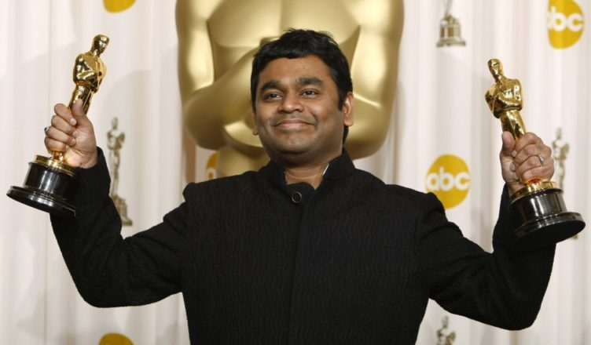

Listen to some of my favourites:
Aayutha Ezhuthu
Singer:
A.R. Rahman feat. Chinmayi, Qudir Khan, Murtaza Khan
Movie plot:
A goon, who dreams of making it big in life, a student leader, who strives to keep politicians away from college election and a third guy who wants to settle abroad. Their lives change after an incident on a bridge.
1. Jana Gana Mana from Aayutha Ezhuthu(2004)
2. Pudhu Vellai Mazhai from Roja(1992)
3. Aaruyirae from Guru(2006)
4. Hosanna from Vinnaithaandi Varuvaayaa(2010)
5. Poovukkul from Jeans(1998)
6. Balleilakka from Sivaji:the boss(2007)
7. Anbendra mazhaiyile from Minsara kanavu(1997)
8. Andha Arabi from Bombay(1995)
9. SemMozhi from Tamil Anthem(2010)
10. Jai Ho from Slumdog Millionaire(2009)
About ARR
A. R. Rahman's works are noted for integrating Indian classical music with electronic
music and traditional orchestral arrangements.Rahman's film-scoring career
began during the early 1990s with the Tamil film Roja. Working in India's film industries,
international cinema, and theatre, Rahman is one of the best-selling ...
Read more
Read more
Images of ARR

